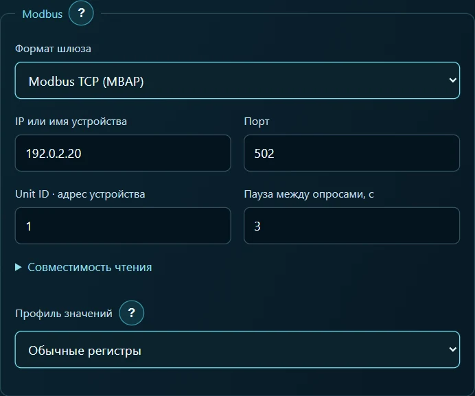
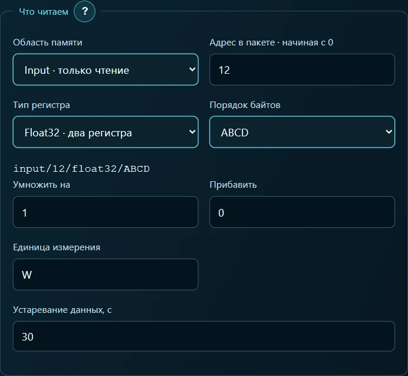
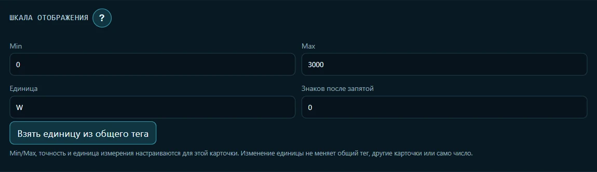
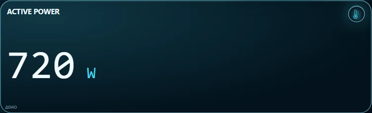

Мощность счётчика Eastron SDM120 на планшете
На планшете хочется видеть, сколько ватт сейчас потребляет нагрузка. У SDM120-Modbus есть RS-485, а планшет находится в Wi-Fi. Между ними нужен сетевой шлюз. В этом опыте читаем одно показание — активную мощность. Для первого запуска можно заменить и шлюз, и счётчик учебным сервером на компьютере.
Выбрать источник · Настроить сеть · Указать регистр · Создать табло · Проверить результат
1. Выбрать источник показаний
Со счётчиком. Понадобятся ARAAMA 0.1.10, установленный SDM120-Modbus, шлюз Ethernet/Wi-Fi ↔ RS-485 и доступ к настройкам шлюза. Запишите его сетевой адрес, порт и формат обмена, а также адрес счётчика на шине (Unit ID). Скорость, чётность и стоп-биты на стороне RS-485 должны совпадать у шлюза и счётчика. Планшет должен видеть шлюз по сети.
Без оборудования. Скачайте учебный счётчик и готовую панель. Распакуйте архив на компьютере с Python 3. Из папки с simulate_meter.py запустите команду ниже. Вместо 192.168.1.20 подставьте локальный IP этого компьютера. Подключите планшет к той же сети.
python simulate_meter.py --bind 192.168.1.20 --port 1502 --watts 720
Оставьте терминал открытым. Учебный сервер отвечает на чтение по Modbus TCP с Unit ID 1. Для проверки другого значения остановите его клавишами Ctrl+C и запустите с --watts 350. Для просмотра готовой карточки сначала экспортируйте текущий проект в Настройки → Проекты, затем откройте panel.json из архива. Для сборки вручную начните с пустого учебного экрана. ARAAMA 0.1.10 и руководства
2. Сеть и шлюз
В Настройки → Сеть выберите подключение SDM120 из проекта. При ручной сборке нажмите + Подключение, введите SDM120 и выберите протокол Modbus TCP. В поле формата шлюза укажите способ передачи, настроенный на вашем шлюзе.
| Поле подключения | Учебный сервер | Физический шлюз |
|---|---|---|
| Формат шлюза | Modbus TCP (MBAP) | MBAP при преобразовании TCP в RTU. Для прозрачного последовательного моста — Modbus RTU через TCP (RS-485) |
| IP или имя устройства | Адрес компьютера из команды запуска | Сетевой адрес шлюза |
| Порт | 1502 | Порт из настроек шлюза. Для MBAP часто используется 502 |
| Unit ID | 1 | Адрес счётчика на RS-485 |
| Пауза между опросами | 3 с | 3 с для этого примера |
| Профиль / тайм-аут | Обычные регистры / 5000 мс | Обычные регистры / 5000 мс для первого опыта |

Нажмите Сохранить подключение. Один сетевой адрес определяет шлюз, а Unit ID выбирает прибор на шине за ним. В поле совместимости чтения достаточно оставить стандартный максимум 125 регистров. Одно показание мощности занимает два соседних регистра.
3. Завести тег активной мощности
Откройте Настройки → Теги → + Тег. Укажите название Active power, подключение SDM120, доступ Только чтение. В готовом проекте откройте уже существующий Active power. В разделе Что читаем заполните поля:
| Поле | Значение |
|---|---|
| Область памяти | Input · только чтение (функция 04) |
| Адрес в пакете, начиная с 0 | 12 |
| Тип регистра | Float32 · два регистра |
| Порядок байтов | ABCD для исходного порядка Eastron |
| Умножить / прибавить | 1 / 0 |
| Единица / устаревание | W / 30 с |
В карте именно этой модели строка 30013 — Active power содержит адрес 0x000C, то есть 12. В поле ARAAMA вводится адрес в пакете. После настройки проверьте строку input/12/float32/ABCD и нажмите Сохранить тег. Карта регистров Eastron, стр. 5

4. Создать цифровое табло
В сохранённом теге Active power откройте Использование на экранах. В поле вида новой карточки выберите Цифровое табло и нажмите Создать карточку этого тега. Откройте параметры табло, оставьте название Active power, единицу W и 0 знаков после запятой. Для цифрового табло достаточно числа: границы шкалы не нужны. Если открыли готовый проект, одно табло уже связано с тегом.

5. Сверить показание
Нажмите Запуск и дождитесь очередного опроса. При --watts 720 ожидается 720 W. Если перезапустить учебный сервер с --watts 350, число после восстановления соединения должно измениться на 350 W.

На физическом счётчике откройте показание активной мощности и сравните его с планшетом при ровной нагрузке. Например, 0,72 кВт на дисплее соответствует 720 Вт. Пустое табло — повод сначала проверить IP, порт и Unit ID. При ответе об ошибке адреса сверьте Input, 12, два регистра. Если приходит число совершенно другого порядка, проверьте Float32, порядок байтов шлюза и множитель тега.